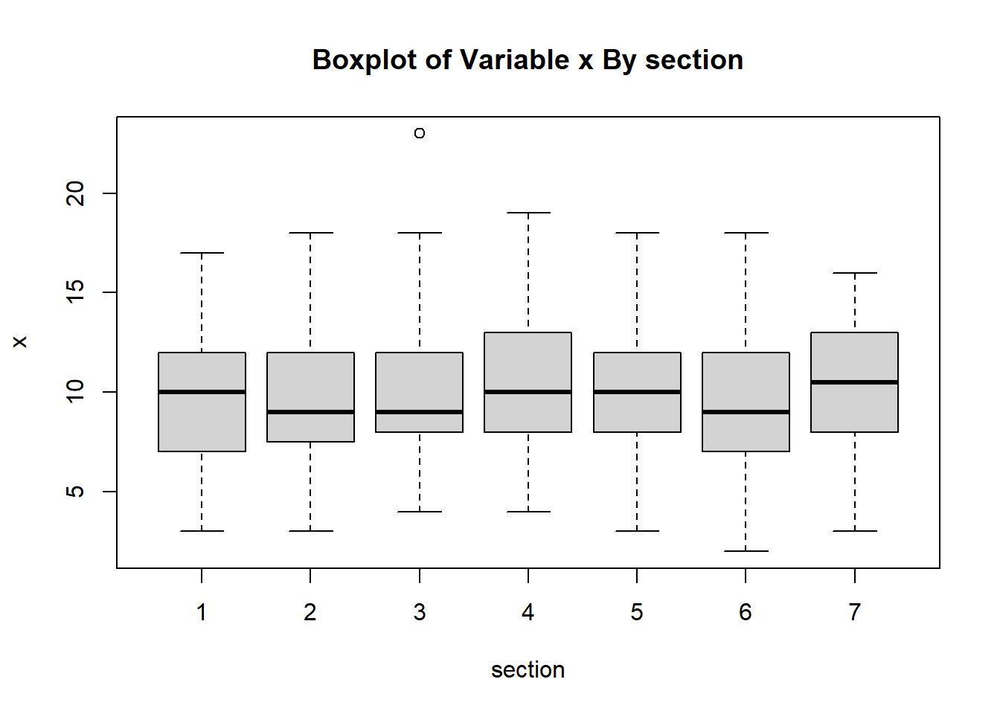
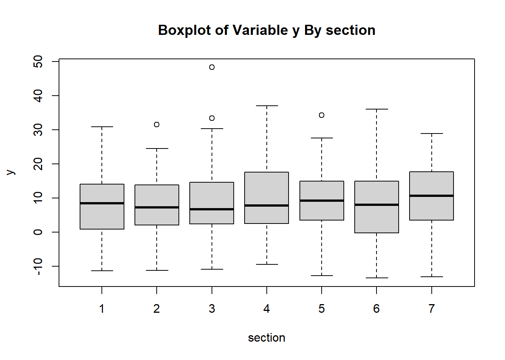
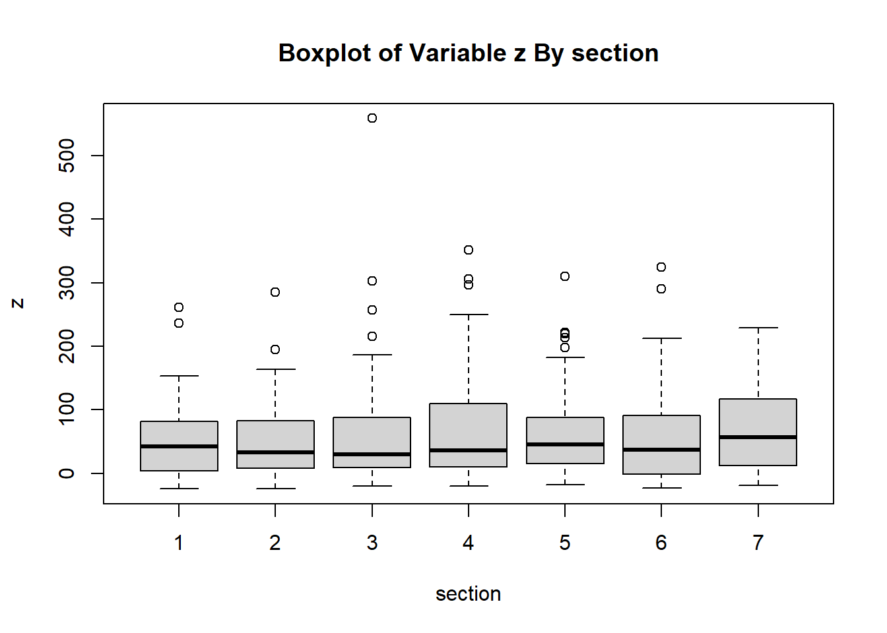
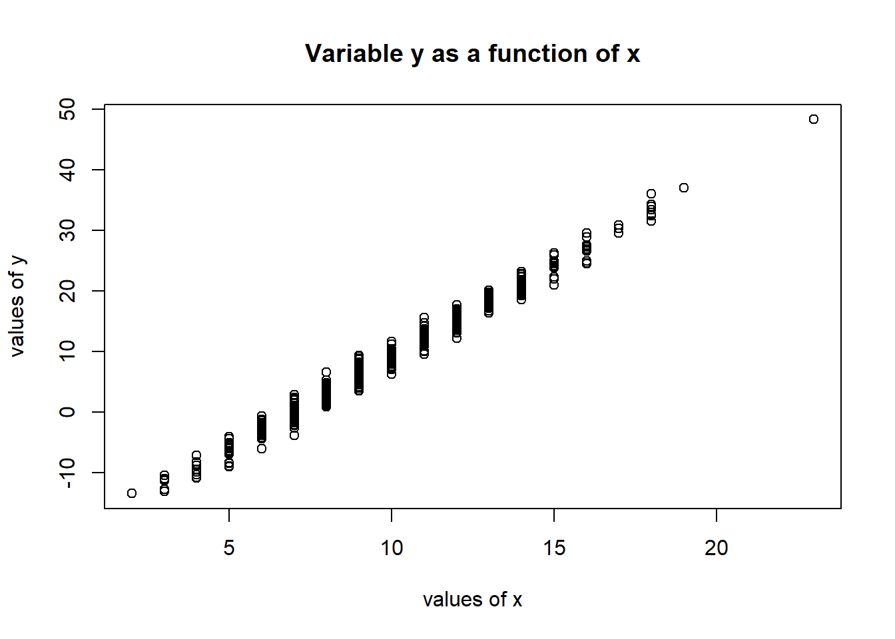
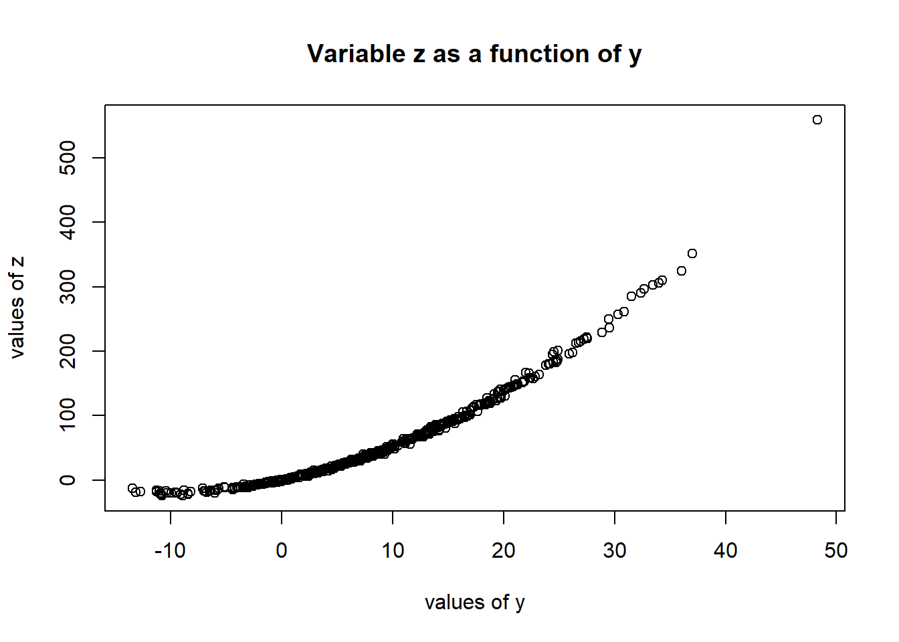
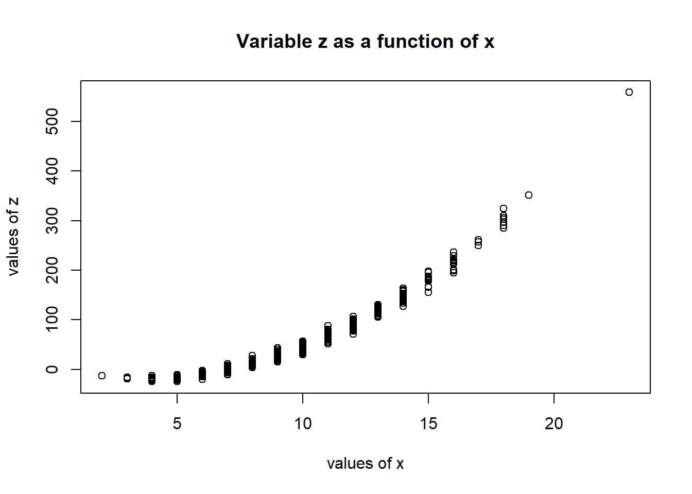
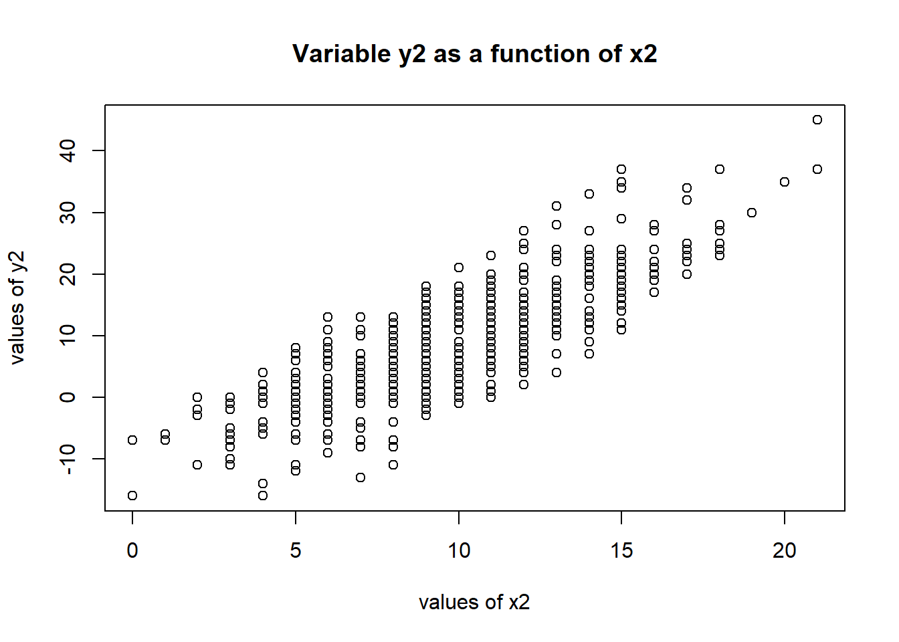
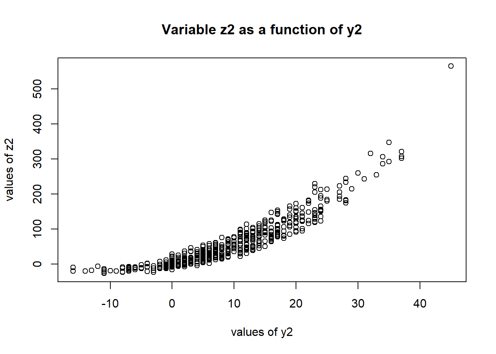
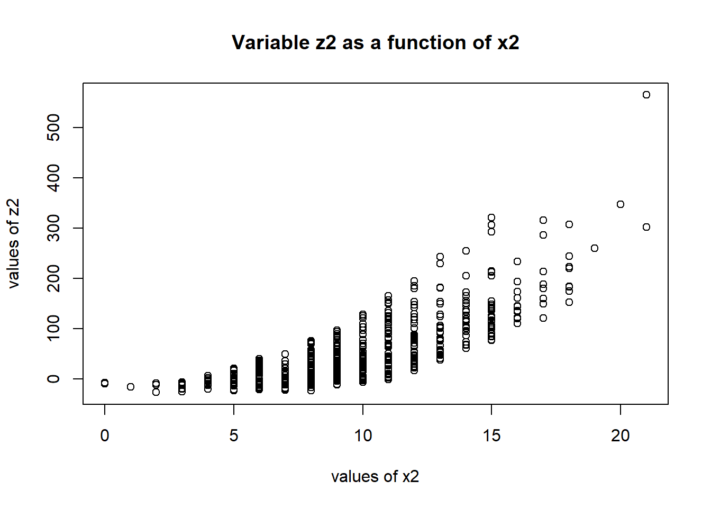

# DA 6833 02T
# Summer 2024
# School of Data Science
# University of Texas at San Antonio
# Zane Chumley
# Banner ID: @01318598
# UTSAid: wgs999Data Exercise
Assignment 4: All About Data
Startup
Introduction
Install Packages as Needed
# install.packages("simstudy")Load Libraries as Needed
# library(readxl) #for loading Excel files
# library(dplyr) #for data processing/cleaning
# library(tidyr) #for data processing/cleaning
library(tidyverse)── Attaching core tidyverse packages ──────────────────────── tidyverse 2.0.0 ──
✔ dplyr 1.1.4 ✔ readr 2.1.5
✔ forcats 1.0.0 ✔ stringr 1.5.1
✔ ggplot2 3.5.1 ✔ tibble 3.2.1
✔ lubridate 1.9.3 ✔ tidyr 1.3.1
✔ purrr 1.0.2
── Conflicts ────────────────────────────────────────── tidyverse_conflicts() ──
✖ dplyr::filter() masks stats::filter()
✖ dplyr::lag() masks stats::lag()
ℹ Use the conflicted package (<http://conflicted.r-lib.org/>) to force all conflicts to become errors# library(skimr) #for nice visualization of data
# library(here) #to set paths
# library(dslabs) #for data used in this assignment
library(tibble)
library(simstudy)Selecting Option 2: Generate and explore synthetic data
Part One
Write code that generates a synthetic dataset. This dataset should have multiple variables, and there should be some associations between variables.
# Make it reproducible
set.seed(641)
# Global Settings
observations=500
# Defining First Variable: x
defined <- defData(varname="x"
, formula=10
, variance=1.3
, dist="poisson"
)
# Defining Second Variable: y
defined <- defData(defined
, varname="y"
, formula="3*(x-7)"
, variance=1.5
, dist="normal"
)
# Defining Third Variable: z
defined <- defData(defined
, varname="z"
, formula="x*y/2"
, variance=1.7
, dist="normal"
)
# Now we will generate desired observations of the synthetic data.
zaneata <- genData(observations
, defined
)
# Finally, we will divide as evenly as possible the desired observations into seven (7) sections.
zaneata <- trtAssign(zaneata
, nTrt = 7
, grpName = "section"
, balanced = TRUE
)
# Now let's look at the first and last ten (10) observations of the data.
head(zaneata,10)Key: <id>
id x y z section
<int> <int> <num> <num> <int>
1: 1 13 18.254358 117.86337 7
2: 2 15 24.751103 186.93360 3
3: 3 9 7.035150 32.46657 2
4: 4 9 7.231929 32.68282 2
5: 5 5 -6.831602 -16.96944 1
6: 6 14 19.657123 137.63140 1
7: 7 9 8.261770 37.22343 1
8: 8 8 3.111795 14.84778 6
9: 9 9 8.642109 40.30047 6
10: 10 6 -3.499200 -10.40272 4tail(zaneata,10)Key: <id>
id x y z section
<int> <int> <num> <num> <int>
1: 491 13 19.6520625 127.789864 4
2: 492 10 9.6177054 48.275649 1
3: 493 14 20.9016717 147.469302 7
4: 494 7 0.8608051 4.059823 6
5: 495 12 16.2010577 97.448963 7
6: 496 13 19.0307264 125.239466 2
7: 497 7 0.7081732 1.141877 1
8: 498 11 11.0524830 60.482550 3
9: 499 9 9.3003280 40.294613 5
10: 500 8 1.7157870 9.459163 5Part Two
Then write code that explores the data by making plots or tables to confirm that your synthetic data is what you expect it to be.
# Let's get some basic information about the data generated.
summary(zaneata$x) Min. 1st Qu. Median Mean 3rd Qu. Max.
2.000 8.000 10.000 9.898 12.000 23.000 summary(zaneata$y) Min. 1st Qu. Median Mean 3rd Qu. Max.
-13.427 2.147 8.384 8.770 15.444 48.277 summary(zaneata$z) Min. 1st Qu. Median Mean 3rd Qu. Max.
-24.247 7.947 40.859 58.816 92.287 558.538 table(zaneata$section)
1 2 3 4 5 6 7
72 71 71 71 71 72 72 Now let’s take a look at the three (3) variables by section.
boxplot(zaneata$x~zaneata$section
, main="Boxplot of Variable x By section"
, xlab="section"
, ylab="x"
)
boxplot(zaneata$y~zaneata$section
, main="Boxplot of Variable y By section"
, xlab="section"
, ylab="y"
)
boxplot(zaneata$z~zaneata$section
, main="Boxplot of Variable z By section"
, xlab="section"
, ylab="z"
)
Next, let’s get a qualitative idea at the relationships between the three (3) variables. As we built y off of x and z off of both y and x, we will graph the following relationships:
- y=f(x)
- z=f(y)
- z=f(x)
# Scatterplots:
plot(zaneata$y~zaneata$x
, main="Variable y as a function of x"
, xlab="values of x"
, ylab="values of y"
)
plot(zaneata$z~zaneata$y
, main="Variable z as a function of y"
, xlab="values of y"
, ylab="values of z"
)
plot(zaneata$z~zaneata$x
, main="Variable z as a function of x"
, xlab="values of x"
, ylab="values of z"
)
All plots show a fairly strong relationship between the values on the axes of all three (3) plots. This is not surprising, given that the synthetic data was derived primarily from previously-defined variables.
Since the correlations are so strong, we’ll introduce additional randomness in the values of all three (3) variables, and then we’ll re-run the plots. We’ll base the degree of randomness on the third root of the range of the existing values, then allow a random value in the range to be either added or subtracted to the value.
Finally, to further destabilize the data, we will round all three (3) variables to integers.
#Calculate range of randomness for each variable
xrange <- trunc((max(zaneata$x)-min(zaneata$x))^(1/3)+0.5)
xrangedist=paste("Additional randomness of x will be between "
, 0-xrange
, " and "
, xrange
)
print(xrangedist)[1] "Additional randomness of x will be between -3 and 3"yrange <- trunc((max(zaneata$y)-min(zaneata$y))^(1/3)+0.5)
yrangedist=paste("Additional randomness of y will be between "
, 0-yrange
, " and "
, yrange
)
print(yrangedist)[1] "Additional randomness of y will be between -4 and 4"zrange <- trunc((max(zaneata$z)-min(zaneata$z))^(1/3)+0.5)
zrangedist=paste("Additional randomness of z will be between "
, 0-zrange
, " and "
, zrange
)
print(zrangedist)[1] "Additional randomness of z will be between -8 and 8"# Add columns for updated variables
zaneata <- add_column(zaneata, x2=1:500, .after="x")
zaneata <- add_column(zaneata, y2=1:500, .after="y")
zaneata <- add_column(zaneata, z2=1:500, .after="z")
# Set ranges for sample function
xsample <- c(-xrange:xrange)
ysample <- c(-yrange:yrange)
zsample <- c(-zrange:zrange)
# Update the values based on newly-introduced randomness
for (index in 1:observations)
{
xrand <- sample(x=xsample
, 1
, replace = FALSE
, prob = NULL
)
yrand <- sample(ysample
, 1
, replace = FALSE
, prob = NULL
)
zrand <- sample(zsample
, 1
, replace = FALSE
, prob = NULL
)
zaneata[index,]$x2 <- trunc(zaneata[index,]$x + xrand + 0.5)
zaneata[index,]$y2 <- trunc(zaneata[index,]$y + yrand + 0.5)
zaneata[index,]$z2 <- trunc(zaneata[index,]$z + zrand + 0.5)
}
# Looking again at the first and last ten (10) observations of the data.
head(zaneata,10)Key: <id>
id x x2 y y2 z z2 section
<int> <int> <int> <num> <int> <num> <int> <int>
1: 1 13 14 18.254358 19 117.86337 119 7
2: 2 15 18 24.751103 25 186.93360 184 3
3: 3 9 9 7.035150 5 32.46657 29 2
4: 4 9 11 7.231929 8 32.68282 30 2
5: 5 5 3 -6.831602 -7 -16.96944 -20 1
6: 6 14 15 19.657123 21 137.63140 136 1
7: 7 9 9 8.261770 6 37.22343 44 1
8: 8 8 8 3.111795 3 14.84778 8 6
9: 9 9 12 8.642109 10 40.30047 47 6
10: 10 6 9 -3.499200 -1 -10.40272 -5 4tail(zaneata,10)Key: <id>
id x x2 y y2 z z2 section
<int> <int> <int> <num> <int> <num> <int> <int>
1: 491 13 14 19.6520625 18 127.789864 126 4
2: 492 10 13 9.6177054 13 48.275649 47 1
3: 493 14 16 20.9016717 17 147.469302 144 7
4: 494 7 9 0.8608051 5 4.059823 5 6
5: 495 12 15 16.2010577 20 97.448963 91 7
6: 496 13 11 19.0307264 16 125.239466 125 2
7: 497 7 9 0.7081732 0 1.141877 7 1
8: 498 11 9 11.0524830 14 60.482550 60 3
9: 499 9 6 9.3003280 13 40.294613 40 5
10: 500 8 5 1.7157870 1 9.459163 9 5# Let's get some basic information about the destablized data.
summary(zaneata$x2) Min. 1st Qu. Median Mean 3rd Qu. Max.
0.000 7.000 10.000 9.872 12.000 21.000 summary(zaneata$y2) Min. 1st Qu. Median Mean 3rd Qu. Max.
-16.00 2.00 8.00 8.99 15.00 45.00 summary(zaneata$z2) Min. 1st Qu. Median Mean 3rd Qu. Max.
-27.00 8.00 40.00 59.46 93.00 565.00 Now let’s compare, side-by-side, the three (3) functions using both the original and the destabilized data. Note that the axes on the side-by-side plots were not equalized, but set automatically based on each variable’s range.
plot(zaneata$y~zaneata$x
, main="Variable y as a function of x"
, xlab="values of x"
, ylab="values of y"
)
plot(zaneata$y2~zaneata$x2
, main="Variable y2 as a function of x2"
, xlab="values of x2"
, ylab="values of y2"
)
plot(zaneata$z~zaneata$y
, main="Variable z as a function of y"
, xlab="values of y"
, ylab="values of z"
)
plot(zaneata$z2~zaneata$y2
, main="Variable z2 as a function of y2"
, xlab="values of y2"
, ylab="values of z2"
)
plot(zaneata$z~zaneata$x
, main="Variable z as a function of x"
, xlab="values of x"
, ylab="values of z"
)
plot(zaneata$z2~zaneata$x2
, main="Variable z2 as a function of x2"
, xlab="values of x2"
, ylab="values of z2"
)
Comparing the plots for the original and destabilized data of all three (3) functions, nontrivial instability has been introduced by the destablization. Nonetheless, the correlation in all three (3) functions remains apparent.
Part Three
Then fit a few simple models to the data. For instance, use the lm or glm functions to fit a linear or logistic model. Make sure your model can recover the associations you built into the data. Explore if and how different models might be able to capture the patterns you see.
# Let's run general linear models on the three (3) functions listed above, comparing both the original and destabilized values.
glm(y~x
,data=zaneata
)
Call: glm(formula = y ~ x, data = zaneata)
Coefficients:
(Intercept) x
-21.099 3.018
Degrees of Freedom: 499 Total (i.e. Null); 498 Residual
Null Deviance: 47250
Residual Deviance: 754.4 AIC: 1631glm(y2~x2
,data=zaneata
)
Call: glm(formula = y2 ~ x2, data = zaneata)
Coefficients:
(Intercept) x2
-11.932 2.119
Degrees of Freedom: 499 Total (i.e. Null); 498 Residual
Null Deviance: 47820
Residual Deviance: 16580 AIC: 3176glm(z~y
,data=zaneata
)
Call: glm(formula = z ~ y, data = zaneata)
Coefficients:
(Intercept) y
-1.421 6.868
Degrees of Freedom: 499 Total (i.e. Null); 498 Residual
Null Deviance: 2483000
Residual Deviance: 254100 AIC: 4540glm(z2~y2
,data=zaneata
)
Call: glm(formula = z2 ~ y2, data = zaneata)
Coefficients:
(Intercept) y2
0.1496 6.5969
Degrees of Freedom: 499 Total (i.e. Null); 498 Residual
Null Deviance: 2489000
Residual Deviance: 407400 AIC: 4776glm(z~x
,data=zaneata
)
Call: glm(formula = z ~ x, data = zaneata)
Coefficients:
(Intercept) x
-147.41 20.83
Degrees of Freedom: 499 Total (i.e. Null); 498 Residual
Null Deviance: 2483000
Residual Deviance: 266800 AIC: 4565glm(z2~x2
,data=zaneata
)
Call: glm(formula = z2 ~ x2, data = zaneata)
Coefficients:
(Intercept) x2
-86.98 14.83
Degrees of Freedom: 499 Total (i.e. Null); 498 Residual
Null Deviance: 2489000
Residual Deviance: 958000 AIC: 5204When comparing the linear models between the original and destabilized versions of the data, all three (3) functions shared multiple characteristics:
- The Null Deviance was always greater for the destabilized data than the original data, but only slightly so.
- The AIC was also always greater for the destabilized data than the original data, but, similarly, always less than twice the AIC for the original data.
- Curiously, all the coefficients, for both intercept and function variable, were closer to zero (0) for the destabilized data. This seems counter-intuitive: as you increased instability in the function variable, you would think the coefficient for the function variable would increase, not decrease.
- Unlike the Null Deviance, the Residual Deviance was always markedly larger for the destabilized data than the original data.